01 / 04
CHRONO
La précision en action
- 42 MM
- ACIER 316L
- CHRONOGRAPHE AUTOMATIQUE
- 10 ATM
AURELIS / CHRONO
Un chronographe mécanique conçu pour ceux qui apprécient la précision, le mouvement et un design intemporel.
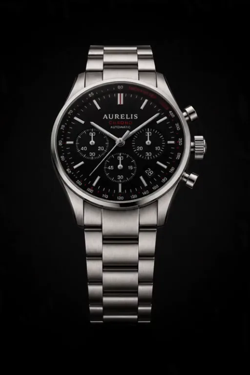
L'horlogerie n'est pas une question de temps.
C'est une question d'exigence.
Chaque montre AURELIS est conçue, réglée et assemblée à la main en Suisse — sans compromis.
LA COLLECTION
La précision en action
La puissance dans l'ombre
L'essence du temps
L'art du mouvement à cœur ouvert
SAVOIR-FAIRE
Chaque courbe, chaque vis, chaque reflet est le résultat d'un geste répété des centaines de fois. Approchez-vous : voici la matière derrière l'aiguille.
MATÉRIAUX
INSPIRATION & IDENTITÉ
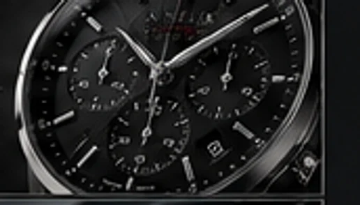
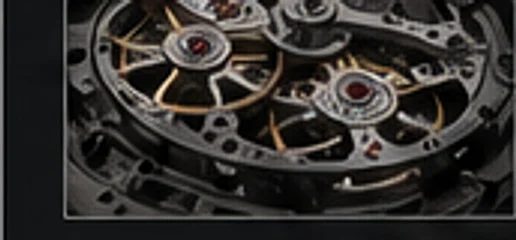
CHRONO
L'exigence du détail. L'instinct de la performance.
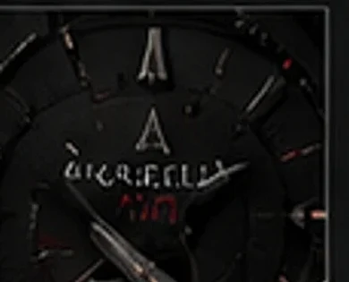
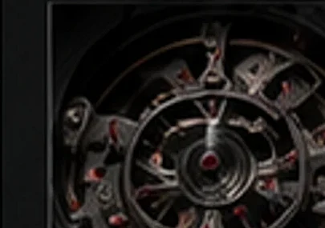
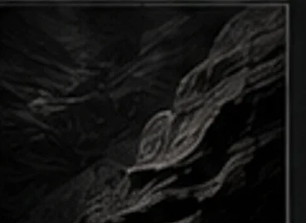
NOIR
Forgée pour avancer.
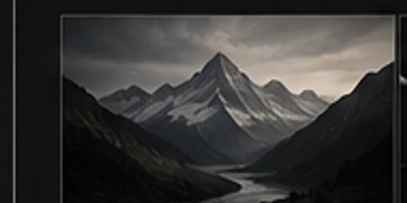
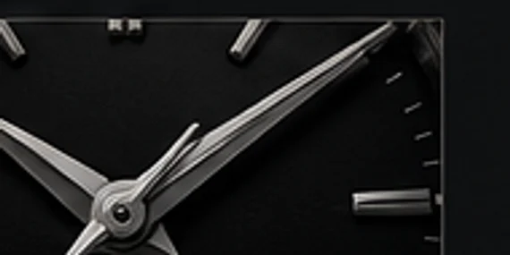
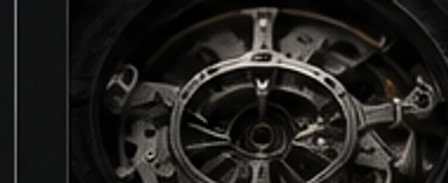
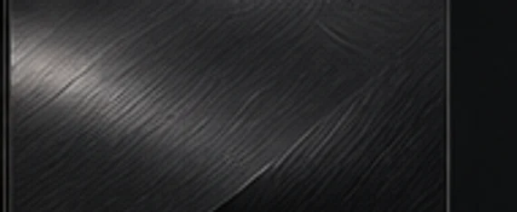
ORIGIN
Forgée dans le temps, conçue pour demain.
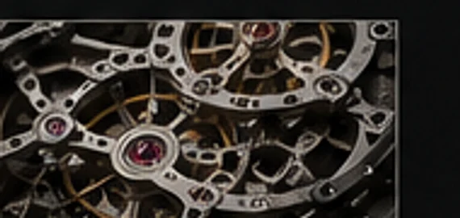
SKELETON
L'architecture de la précision.